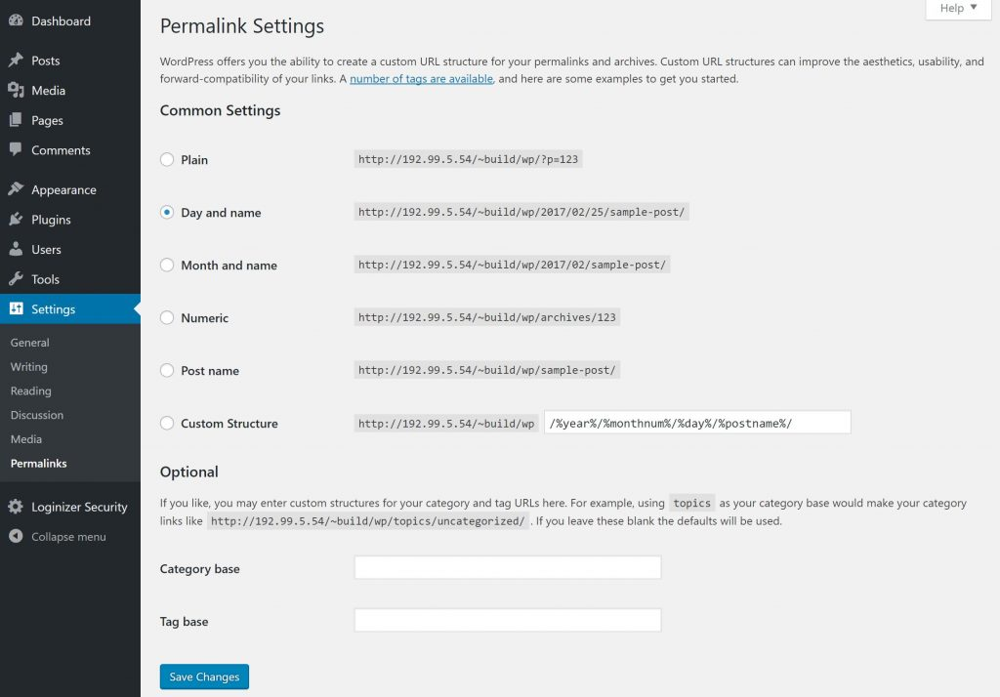

PERMALINKS SETTINGS TAB
DASHBOARD >> SETTINGS >> PERMALINKS
Permalinks
Permalinks are the permanent urls for your posts and pages. Essentially you can think of them as the website address for your content, or what someone linking to your blog post would put into their article. WordPress allows you to choose different formats for your permalinks so that it will be easier for others to find your content. This is also important for SEO ,(Search Engine Optimization)
Permalinks Settings control the URL structure of your blog. This option is directly related to the user experience and also with the SEO of your website.
Detail of General Tab
Common Settings
- Plain/Default It sets the default URL structure in Wordpress.The most unusual URL structure that you should never use. An example of the plain URL structure is:
- http://www.yoursite.com/?p=123
- Day and name It sets URL structure according to the date and name in your posts. This is the default permalink structure for WordPress. An example of the day and name based structure
is
- http://www.yoursite.com/2018/02/18/sample-post/
- Month and name It sets the URL structure according to the month and name in your post. The month and name based URL structure looks like:
- http://www.yoursite.com/2018/02/sample-post/
- Numeric It sets numbers in the URL structure in your post. This is also not much meaningful URL structure. The numeric structure looks like:
- http://www.yoursite.com/archives/123
- Post name It sets post name in the URL structure in your post. One of the most popular permalink structure. The post name structure looks very simple like:
- http://www.yoursite.com/sample-post
- Custom Structure It sets the URL structure of your choice by writing the desired name in the given text box. This provides you a textbox where you can put multiple parameters to
create your own desired custom URL structure. One example is - %year%/%category%/%postname%/. That would look like:
- http://www.yoursite.com/2018/sample-category/sample-post
- Category base You can enter a custom prefix for your category archive URLs here.
- Tag base You may enter a custom prefix for your tag archive URLs here.
These are optional. You can add custom structure for main category or tag URL. If your text box is empty then default settings is used. Here you have two options.
Once you click the save changes button, a confirmation text box will appear notifying you that your settings have been saved.